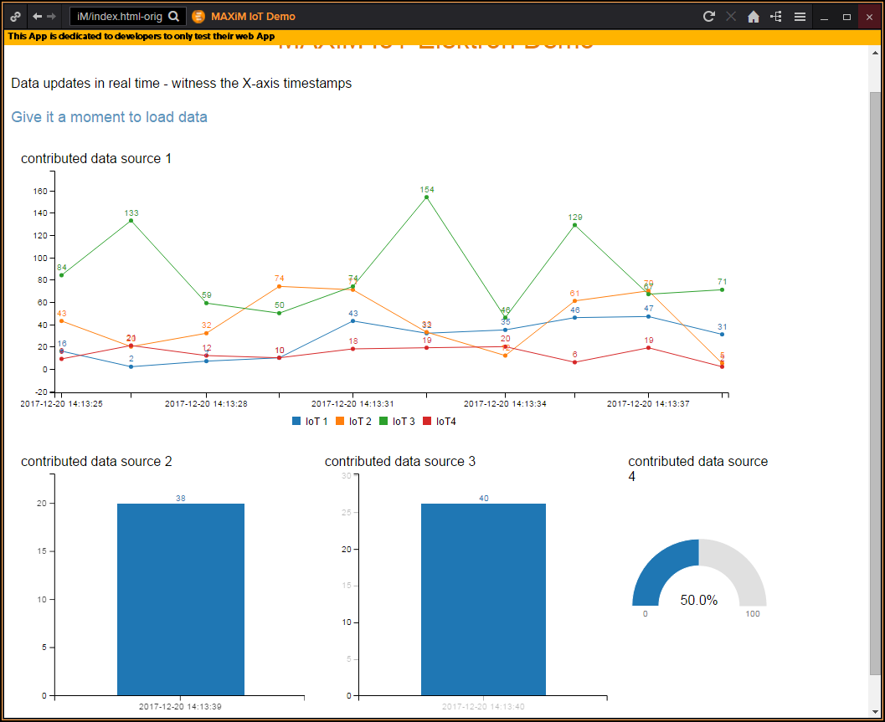

Here is what happens when we start to aggregate data from many IoT contributors...
Turnips Harvested - Per Farmer
Turnip Productivity - Nationwide
It doesn't have to be turnips!
It could be oil. It could be radiation. It could be temperature. It could be occupancy. It could be Bitcoin transactions. It could be any of millions of data points that will be output by the millions of Internet-connected things.
We can aggregate, analyse and display. Either within an application, a wep page, or even an Eikon App...

Once available on the Platform, our customers can subscribe, analyse and mix with their own data